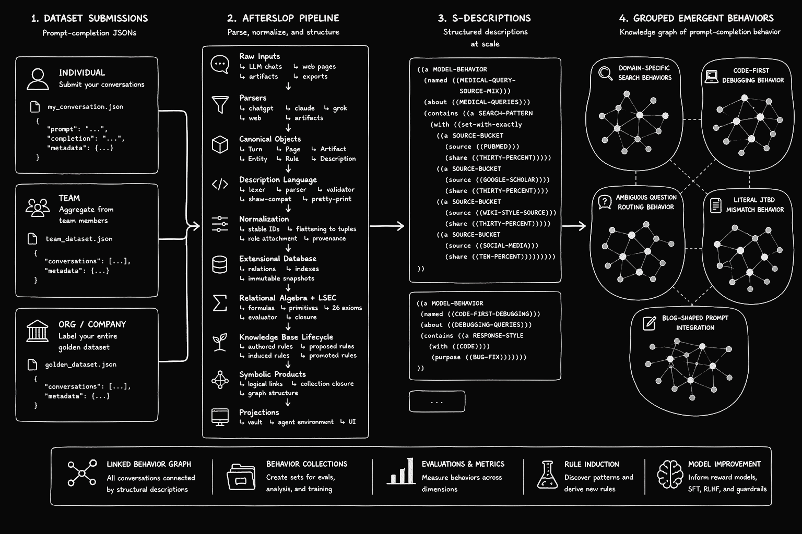

A deterministic symbolic knowledge system for LLM conversation exports. Turns chat histories from ChatGPT, Claude, and Grok into a cross-linked Obsidian vault backed by a symbolic extensional database.
Based on David E. Shaw’s 1980 dissertation on conceptual matching: Knowledge-Based Retrieval on a Relational Database Machine.
For the tutor team
Every day you have high-signal conversations with Grok (and other models) that surface real behavioral patterns — refusals, sycophancy modes, reasoning collapses, jailbreak techniques, style tics, capability boundaries. Right now those insights live in linear chat history and are hard to compare across sessions or teammates.
Afterslop turns those tutoring sessions into a living symbolic knowledge base. Each turn is parsed, described in a constrained formal language, normalized, and indexed with Shaw-style matching. The result is a queryable graph of model behavior that gets more powerful the more you and the team use it.
Two ways to work inside the app
1. Agent Chat panel (Cmd + L)
The desktop app has a built-in agent sidebar. You can talk to Grok models that have been given first-class tools over your (and the team’s) tutoring data:
- Normal Grok models — When you say “save every clear example of excessive agreeableness on political topics as a collection,” the model autonomously calls
run_match, proposes a good LSEC pattern, and saves the collection with backlinks. You get an immediatesaved_asconfirmation. - Grok Build mode — Select “Grok Build” in the dropdown and you get the full visible-reasoning ACP leader + the exact same
.grok/docs/agents/harness (AGENT.md + ENVIRONMENT.md) that powers the deepest Grok Build sessions. It is still strictly permissioned: all writes go through propose → review → promote, and it can only act on the vault through the approved bin/ surface.
Shared tools in both modes include run_match, read_turn, list_collections, vault_stats, and propose_rule.
2. The bin/ CLI surface
When you want precision, scripting, or to stay in the terminal, the same symbolic core is exposed through a small set of high-leverage commands:
bin/match— run any LSEC pattern against the current snapshot (with--saveto persist as a collection)bin/propose-rule,bin/review-proposal,bin/promote-rules— the full disciplined rule lifecyclebin/grok-load-context— pull specific turns or an entire collection into your current Grok Build session contextbin/vault-stats,bin/materialize_vault, etc.
The .grok/ harness (AGENT.md + ENVIRONMENT.md) defines exactly what the deep agent mode is allowed to see and do. It is the same clean, auditable contract used in the main Grok Build environment.

From raw tutoring exports → structured descriptions → queryable behavior graph and rule induction.